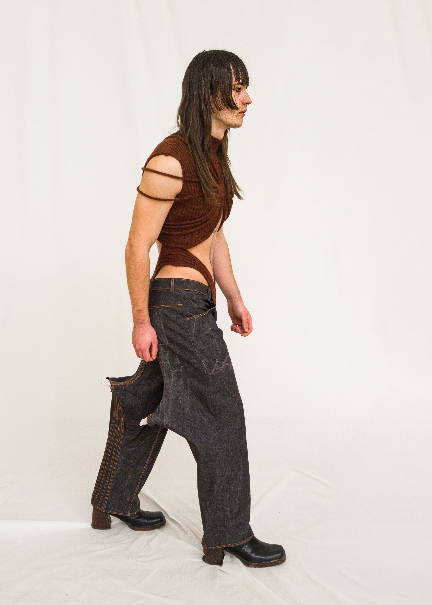
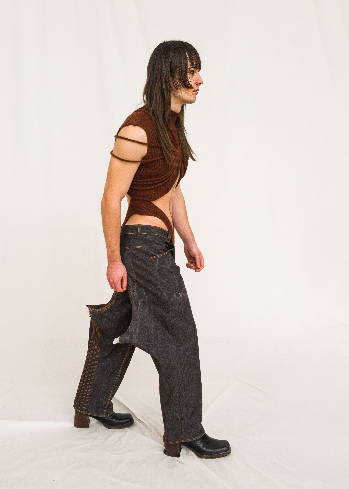
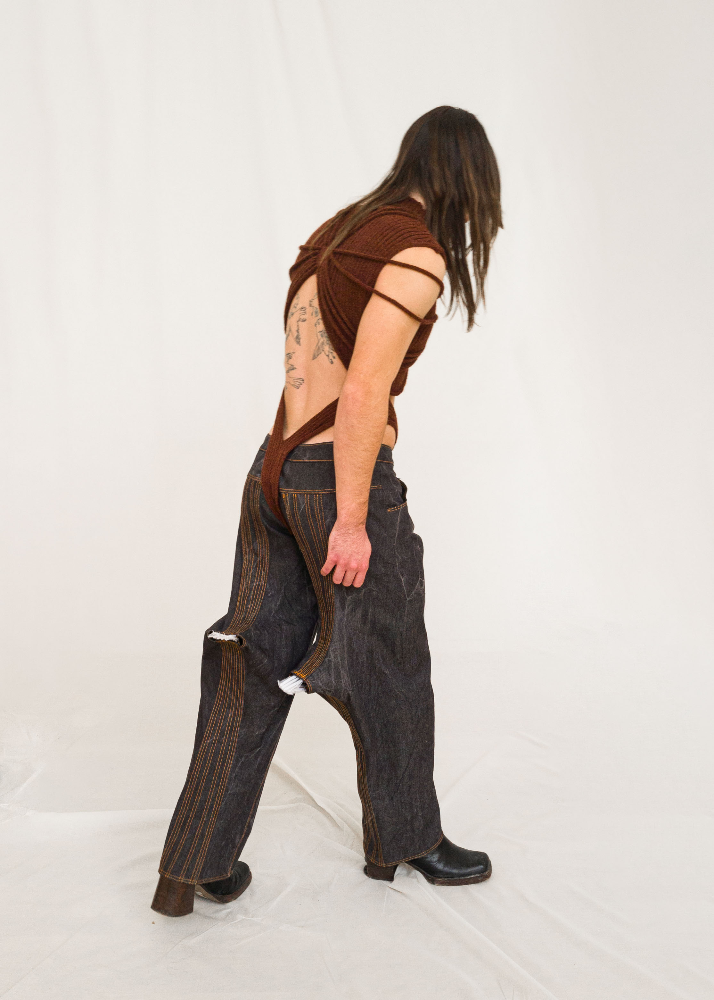
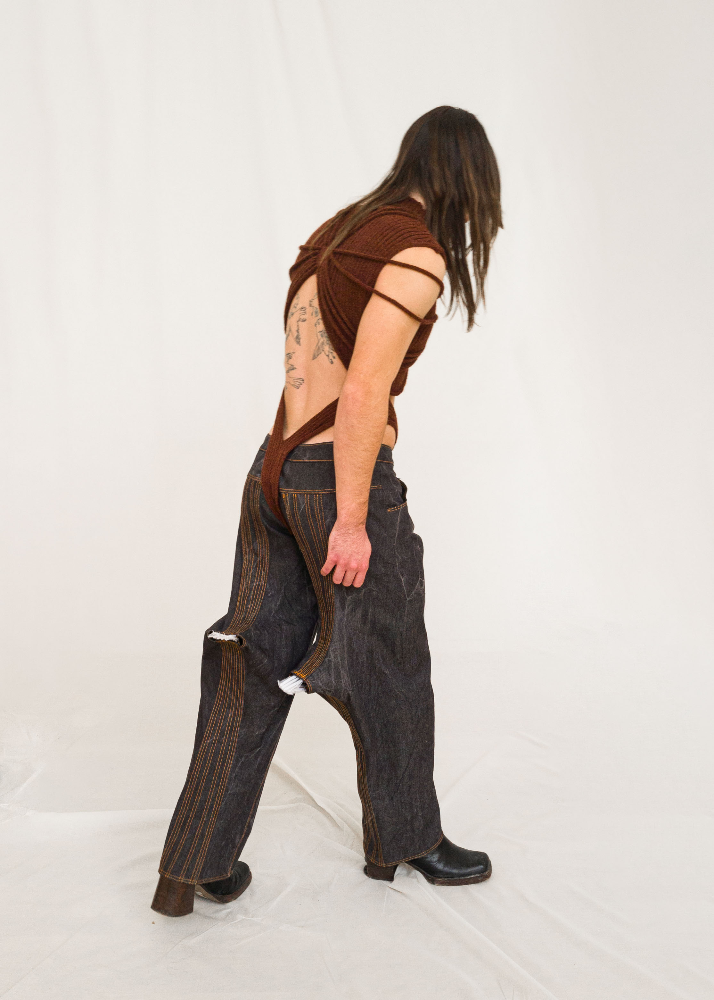

Acte 1: Les animal·es
Acte 1: Les animal·es est une série de trois costumes produite dans le cadre de ma pré-collection de bachelor. Elle explore l'idée d'hybridation animale comme une manière de questionner les dicotomies humain/animal/homme/femme/nature/culture/able/disable/machine/vivant. Ces costumes ont été pensés en collaboration avec les personnes qui les portent pour mettre en valeur des qualités qui les représentent.
Crédits
- Modèles:


 

 

Tenue 1: Haut en organza de soie orange, plissé et teint à la main. Jeans en denim brut et sac en céramique.
Tenue 2: Short et t-shirt en jersey de coton imprimée en sérigraphie avec une encre puff, imprimée de lézard à barbre. Robe en chiffon de soie blanche traitée avec du shibori 3d et sac de cuir imprimé en sérigraphie et anse en céramique.
Tenue 3: Haut en tricot de laine, jeans en denim brut balainé.